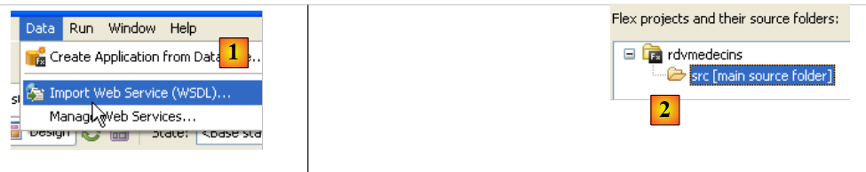
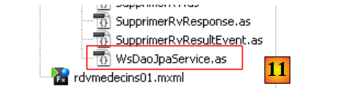
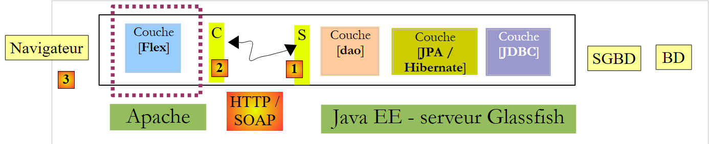

6. Clients Flex du service JEE des rendez-vous
Nous présentons maintenant deux clients Flex du service web JEE des rendez-vous. L'IDE utilisé est Flex Builder 3. Une version de démonstration de ce produit est téléchargeable à l'Url [https://www.adobe.com/cfusion/tdrc/index.cfm?loc=fr_fr&product=flex]. Flex Builder 3 est un IDE Eclipse. Par ailleurs, pour exécuter le client Flex, nous utilisons un serveur web Apache de l'outil Wamp [http://www.wampserver.com/]. N'importe quel serveur Apache fait l'affaire. Le navigateur qui affiche le client Flex doit disposer du plugin Flash Player version 9 minimale.
Les applications Flex ont la particularité de s'exécuter au sein du plugin Flash Player du navigateur. En cela elles se rapprochent des applications Ajax qui embarquent dans les pages envoyées au navigateur des scripts JavaScript qui sont ensuite exécutés au sein du navigateur. Une application Flex n'est pas une application web au sens où on l'entend habituellement : c'est une application cliente de services délivrés par des serveurs web. En cela, elle est analogue à une application de bureau qui serait cliente de ces mêmes services. Elle diffère cependant en un point : elle est téléchargée initialement depuis un serveur web au sein d'un navigateur disposant du plugin Flash Player capable de l'exécuter.
Comme une application de bureau, une application Flex est composée principalement de deux éléments :
- une partie présentation : les vues affichées dans le navigateur. Ces vues ont la richesse des fenêtres des applications de bureau. Une vue est décrite à l'aide d'un langage à balises appelé MXML.
- une partie code qui gère principalement les événements provoqués par les actions de l'utilisateur sur la vue. Ce code peut être écrit également en MXML ou avec un langage orienté objet appelé ActionScript. Il faut distinguer deux types d'événements :
- l'événement qui nécessite d'avoir un échange avec le serveur web : remplissage d'une liste par des données fournies par une application web, envoi des données d'un formulaire au serveur, ... Flex fournit un certain nombre de méthodes pour communiquer avec le serveur de façon transparente pour le développeur. Ces méthodes sont par défaut asynchrones : l'utilisateur peut continuer à interagir avec la vue pendant la requête au serveur.
- l'événement qui modifie la vue affichée sans échange de données avec le serveur, par exemple tirer un élément d'un arbre pour le déposer dans une liste. Ce type d'événement est entièrement traité localement au sein du navigateur.
Une application Flex est souvent exécutée de la façon suivante :
 |
- en [1], une page Html est demandée
- en [2], elle est envoyée. Elle embarque avec elle un fichier binaire SWF (ShockWave Flash)contenant l'intégralité de l'application Flex : toutes les vues et le code de gestion des événements de celles-ci. Ce fichier sera exécuté par le plugin FlashPlayer du navigateur.
 |
- l'exécution du client Flex se fait en local sur le navigateur sauf lorsqu'il a besoin de données externes. Dans ce cas, il les demande au serveur [3]. Il les reçoit en [4] selon des formats divers : XML ou binaire. L'application interrogée sur le serveur web peut être écrite dans un langage quelconque. Seul compte le format de la réponse.
Nous avons décrit l'architecture d'exécution d'une application Flex afin que le lecteur perçoive bien la différence entre celle-ci et celle d'une application Web classique, sans Ajax, telle que l'application Asp.Net décrite précédemment. Dans cette dernière, le navigateur est passif : il affiche simplement des pages Html construites sur le serveur web qui les lui envoie.
Dans la suite, nous donnons deux exemples de clients Flex dans le seul but de montrer la diversité des clients d'un service web. L'auteur étant lui-même un débutant Flex, certains points ne seront peut-être pas détaillés comme ils le devraient.
6.1. Un premier client Flex
Nous écrivons maintenant un premier client Flex pour afficher la liste des clients. L'architecture client / serveur mise en place sera la suivante :
 |
Dans cette architecture, il y a deux serveurs web :
- le serveur Glassfish qui exécute le service web distant
- le serveur Apache qui exécute le client Flex du service web distant
Nous construisons le client Flex avec l'IDE Flex Builder 3 :
 |
- dans Flex Builder 3, on crée un nouveau projet en [1]
- on lui donne un nom en [2] et on précise en [3] dans quel dossier le générer
 |
- en [4], on donne un nom à l'application principale (celle qui va être exécutée)
- en [5], le projet une fois généré
- en [6], le fichier MXML principal de l'application
- un fichier MXML comporte une vue et le code de gestion des événements de cette vue. L'onglet [Source] [7] donne accès au fichier MXML. On y trouvera des balises <mx> décrivant la vue ainsi que du code ActionScript.
- la vue peut être construite graphiquement en utilisant l'onglet [Design] [8]. Les balises MXML décrivant la vue sont alors générées automatiquement dans l'onglet [Source]. L'inverse est vrai : les balises MXML ajoutées directement dans l'onglet [Source] sont reflétées graphiquement dans l'onglet [Design].
Comme il a été fait avec les clients C# et Asp.Net précédents, nous allons générer le proxy local C [B] du service web distant S [A] :
 |
Pour que le proxy C puisse être généré, il faut que le service web JEE soit actif.
 |
- en [1], choisir l'option Data / Import Web Service
- en [2], sélectionner le dossier de génération des classes et interfaces du proxy C.
 |
- en [3], mettre l'Uri du fichier WSDL du service web distant S (cf paragraphe 4.10.2) puis passer à l'étape suivante
- en [4] et [5], le service web décrit par le fichier WSDL indiqué en [3]
- en [6] : la liste des méthodes qui vont être générées pour le proxy C. On notera que ce ne sont pas les méthodes réelles du service S. Elles n'ont pas la bonne signature. Ici, chaque méthode présentée a un unique paramètre quelque soit le nombre de paramètres de la méthode réelle du service web. Cet unique paramètre est une instance de classe encapsulant dans ses champs les paramètres attendus par la méthode distante.
- en [7] : le package dans lequel les classes et interfaces du proxy C vont être générées
- en [8] : le nom de la classe locale qui fera office de proxy vers le service web distant
- en [9] : terminer l'assistant.
- en [10] : la liste des classes et interfaces du proxy C généré.
 |
- en [11] : la classe [WsDaoJpaService] implémentant les méthodes du proxy C.
La classe [WsDaoJpaService] générée implémente l'interface [IWsDaoJpaService] suivante :
/**
* Service.as
* This file was auto-generated from WSDL by the Apache Axis2 generator modified by Adobe
* Any change made to this file will be overwritten when the code is re-generated.
*/
package generated.webservices{
import mx.rpc.AsyncToken;
import flash.utils.ByteArray;
import mx.rpc.soap.types.*;
public interface IWsDaoJpaService
{
//Stub functions for the getAllClients operation
/**
* Call the operation on the server passing in the arguments defined in the WSDL file
* @param getAllClients
* @return An AsyncToken
*/
function getAllClients(getAllClients:GetAllClients):AsyncToken;
....
function getAllClients_send():AsyncToken;
...
function get getAllClients_lastResult():GetAllClientsResponse;
...
function set getAllClients_lastResult(lastResult:GetAllClientsResponse):void;
...
function addgetAllClientsEventListener(listener:Function):void;
...
function get getAllClients_request_var():GetAllClients_request;
...
function set getAllClients_request_var(request:GetAllClients_request):void;
...
}
}
- ligne 11 : l'interface [IWsDaoJpaService] implémentée par la classe [WsDaoJpaService]
- lignes 19-31 : les différentes méthodes générées pour la méthode getAllClients() du service web distant. La seule qui se rapproche de celle réellement exposée par le service web est celle de la ligne 19. Elle porte le bon nom mais n'a pas la bonne signature : la méthode getAllClients() du service web distant n'a pas de paramètres.
Le paramètre unique de la méthode getAllClients du proxy C généré est de type GetAllClients suivant :
/**
* GetAllClients.as
* This file was auto-generated from WSDL by the Apache Axis2 generator modified by Adobe
* Any change made to this file will be overwritten when the code is re-generated.
*/
package generated.webservices
{
import mx.utils.ObjectProxy;
import flash.utils.ByteArray;
import mx.rpc.soap.types.*;
/**
* Wrapper class for a operation required type
*/
public class GetAllClients
{
/**
* Constructor, initializes the type class
*/
public function GetAllClients() {}
}
}
C'est une classe vide. Cela pourrait correspondre au fait que la méthode cible getAllClients n'admet pas de paramètre.
Maintenant examinons les classes générées pour les entités Medecin, Client, Rv et Creneau. Examinons par exemple la classe Client :
package generated.webservices
{
import mx.utils.ObjectProxy;
import flash.utils.ByteArray;
import mx.rpc.soap.types.*;
public class Client extends generated.webservices.Personne
{
public function Client() {}
}
}
La classe Client est vide également. Elle dérive (ligne 7) de la classe Personne suivante :
package generated.webservices
{
import mx.utils.ObjectProxy;
import flash.utils.ByteArray;
import mx.rpc.soap.types.*;
public class Personne
{
public function Personne() {}
public var id:Number;
public var nom:String;
public var prenom:String;
public var titre:String;
public var version:Number;
}
}
- lignes 11-15 : on retrouve les attributs de la classe Personne définie au sein du service web JEE.
Nous avons les principaux éléments du proxy C. Nous pouvons désormais l'utiliser.
Le fichier principal [rdvmedecins01.xml] du client est le suivant :
<?xml version="1.0" encoding="utf-8"?>
<mx:Application xmlns:mx="http://www.adobe.com/2006/mxml" layout="vertical" creationComplete="init();">
<mx:Script>
<![CDATA[
import generated.webservices.Client;
...
// données
private var ws:WsDaoJpaService;
[Bindable]
private var clients:ArrayCollection;
private function init():void{
...
}
private function loadClients():void{
...
}
...
private function displayClient(client:Client):String{
...
}
]]>
</mx:Script>
<mx:Label text="Liste des clients" fontSize="14"/>
<mx:List dataProvider="{clients}" labelFunction="displayClient"></mx:List>
<mx:Button label="Afficher les clients" click="loadClients()"/>
<mx:Text id="txtMsgErreur" width="454" height="75"/>
</mx:Application>
Dans ce code, il faut distinguer diverses choses :
- la définition de l'application (ligne 2)
- la description de la vue de celle-ci (lignes 27-30)
- les gestionnaires d'événements en langage ActionScript au sein de la balise <mx:Script> (lignes 3-26).
Commentons pour commencer, la définition de l'application elle-même et la description de sa vue :
- ligne 2 : définit
- le mode de disposition des composants dans le conteneur de la vue. L'attribut layout="vertical" indique que les composants seront les uns sous les autres.
- la méthode à exécuter lorsque la vue aura été instanciée, c.a.d. le moment où tous ses composants auront été instanciés. L'attribut creationComplete="init();" indique que c'est la méthode init de la ligne 13 qui doit être exécutée. creationComplete est l'un des événements que peut émettre la classe Application.
- les ligne 27-30 définissent les composants de la vue
- ligne 27 : définit un texte
- ligne 28 : une liste dans laquelle on mettra la liste des clients. La balise dataProvider="{clients}" indique la source des données qui doivent remplir la liste. Ici, la liste sera remplie avec l'objet clients défini ligne 11. Pour pouvoir écrire dataProvider="{clients}", il faut que le champ clients ait l'attribut [Bindable] (ligne 10). Cet attribut permet à une variable ActionScript d'être référencée à l'extérieur de la balise <mx:Script>. Le champ clients est de type ArrayCollection, un type ActionScript qui permet de stocker des listes d'objets, ici une liste d'objet de type Client.
- ligne 29 : un bouton. Son événement click est géré. L'attribut click="loadClients()" indique que la méthode loadClients de la ligne 17 doit être exécutée lors d'un clic sur le bouton. Ce sera ce bouton qui déclenchera la demande au service web de la liste des clients.
- ligne 30 : une zone de texte destinée à afficher un éventuel message d'erreur qui serait renvoyé par le serveur sur la demande précédente.
Les lignes 27-30 génèrent la vue suivante dans l'onglet [Design] :
 |
- [1] : a été généré par le composant Label de la ligne 27
- [2] : a été généré par le composant List de la ligne 28
- [3] : a été généré par le composant Button de la ligne 29
- [4] : a été généré par le composant Text de la ligne 30
- [5] : un exemple d'exécution
Examinons maintenant le code ActionScript de la page. Ce code gère les événements de la vue.
<mx:Application xmlns:mx="http://www.adobe.com/2006/mxml" layout="vertical" creationComplete="init();">
<mx:Script>
<![CDATA[
import generated.webservices.Client;
...
// données
private var ws:WsDaoJpaService;
[Bindable]
private var clients:ArrayCollection;
private function init():void{
// on instancie le proxy du service web
ws=new WsDaoJpaService();
// on configure les gestionnaires d'évts
ws.addgetAllClientsEventListener(loadClientsCompleted);
ws.addEventListener(FaultEvent.FAULT,loadClientsFault);
}
private function loadClients():void{
// on demande la liste des clients
ws.getAllClients(new GetAllClients());
}
private function loadClientsCompleted(event:GetAllClientsResultEvent):void{
// on récupère les clients dans le résultat envoyé
clients=event.result as ArrayCollection;
}
private function loadClientsFault(event:FaultEvent):void{
// on affiche le msg d'erreur
txtMsgErreur.text=event.fault.message;
}
private function displayClient(client:Client):String{
// on affiche un client
return client.nom + " " + client.prenom;
}
]]>
</mx:Script>
<mx:Label text="Liste des clients" fontSize="14"/>
<mx:List dataProvider="{clients}" labelFunction="displayClient"></mx:List>
<mx:Button label="Afficher les clients" click="loadClients()"/>
<mx:Text id="txtMsgErreur" width="454" height="75"/>
- ligne 9 : ws va désigner le proxy C de type WsDaoJpaService, la classe générée précédemment qui implémente les méthodes d'accès au service web distant.
- ligne 13 : la méthode init exécutée lorsque la vue a été instanciée (ligne 1)
- ligne 15 : une instance du proxy C est créée
- ligne 17 : un gestionnaire d'événement est associé à l'événement "la méthode asynchrone GetAllClients s'est terminée avec succès". Pour toute méthode m du service web distant, le proxy C implémente une méthode addmEventListener qui permet d'associer un gestionnaire à l'événement "la méthode asynchrone m s'est terminée avec succès". Ici, la ligne 17 indique que la méthode loadClientsCompleted de la ligne 26 doit être exécutée lorsque le client Flex aura reçu la liste des clients.
- ligne 18 : un gestionnaire d'événement est associé à l'événement "une méthode asynchrone du proxy C s'est terminée sur un échec". Ici, la ligne 18 indique que la méthode loadClientsFault de la ligne 31 doit être exécutée à chaque fois qu'une requête asynchrone du proxy C vers le service web S échoue. Ici la seule requête qui sera faite est celle qui demande la liste des clients.
- au final, la méthode init de la ligne 13 a instancié le proxy C et défini des gestionnaires d'événements pour la requête asynchrone qui sera faite ultérieurement.
- ligne 21 : la méthode exécutée lors d'un clic sur le bouton [Afficher les clients] (ligne 44)
- ligne 23 : la méthode asynchrone getAllClients du proxy C est exécutée. On lui passe une instance GetAllClients chargée d'encapsuler les paramètres de la méthode distante appelée. Ici, il n'y a aucun paramètre. On crée une instance vide. La méthode getAllClients est asynchrone. L'exécution se poursuit sans attendre les données renvoyées par le serveur. L'utilisateur peut notamment continuer à interagir avec la vue. Les événements qu'il provoque continueront à être gérés. Grâce à la méthode init, nous savons que :
- la méthode loadClientsCompleted (ligne 26) sera exécutée lorsque le client Flex aura reçu la liste des clients
- la méthode loadClientsFault (ligne 31) sera exécutée si la requête se termine sur une erreur.
- ligne 28 : la liste des clients est récupérée dans l'événement. On sait que la méthode getAllClients du service web distant renvoie une liste. On met celle-ci dans le champ clients de la ligne 11. Un transtypage est nécessaire. La liste de la ligne 43 étant liée (Bindable) au champ clients, elle est avertie que ses données ont changé. Elle affiche alors la liste des clients. Elle va afficher chaque élément de la liste clients avec la méthode displayClient (ligne 43).
- ligne 36 : la méthode displayClient reçoit un type Client. Elle doit retourner la chaîne de caractères que doit afficher la liste pour ce client. Ici le nom et le prénom (ligne 38).
- ligne 31 : la méthode exécutée lorsqu'une requête au service web échoue. Elle reçoit un paramètre de type FaultEvent. Cette classe a un champ fault qui encapsule l'erreur renvoyée par le serveur. fault.message est le message accompagnant l'erreur.
- ligne 33 : le message d'erreur est affiché dans la zone de texte prévue à cet effet.
Lorsque l'application a été construite, son code exécutable se trouve dans le dossier [bin-debug] du projet Flex :
 |
Ci-dessus,
- le fichier [rdvmedecins01.html] représente le fichier Html qui sera demandé par le navigateur au serveur web pour avoir le client Flex
- le fichier [rdvmedecins01.swf] est le binaire du client Flex qui sera encapsulé dans la page Html envoyée au navigateur puis exécuté par le plugin Flash Player de celui-ci.
Nous sommes prêts à exécuter le client Flex. Il nous faut auparavant mettre en place l'environnement d'exécution qui lui est nécessaire. Revenons à l'architecture client / serveur testée :
 |
Côté serveur :
- lancer le SGBD MySQL
- lancer le serveur Glassfish
- déployer le service web JEE des rendez-vous s'il n'est pas déployé
- éventuellement tester l'un des clients précédents pour vérifier que tout est en place côté serveur.
Côté client :
Lancer le serveur Apache à qui sera demandée l'application Flex. Ici nous utilisons l'outil Wamp. Avec cet outil, nous pouvons associer un alias au dossier [bin-debug] du projet Flex.
 |
- l'icône de Wamp est en bas de l'écran [1]
- par un clic gauche sur l'icône Wamp, sélectionner l'option Apache [2] / Alias Directories [3, 4]
- sélectionner l'option [5] : Add un alias
 |
- en [6] donner un alias (un nom quelconque) à l'application web qui va être exécutée
- en [7] indiquer la racine de l'application web qui portera cet alias : c'est le dossier [bin-debug] du projet Flex que nous venons de construire.
Rappelons la structure du dossier [bin-debug] du projet Flex :
 |
Le fichier [rdvmedecins01.html] est le fichier Html de l'application Flex. Grâce à l'alias que nous venons de créer sur le dossier [bin-debug], ce fichier sera obtenu par l'url [http://localhost/rdvmedecins/rdvmedecins01.html]. Nous demandons celle-ci dans un navigateur disposant du plugin Flash Player version 9 ou supérieure :
 |
- en [1], l'Url de l'application Flex
- en [2], nous demandons la liste des clients
- en [3], le résultat obtenu lorsque tout va bien
- en [4], le résultat obtenu lorsque nous demandons l'affichage des clients alors que le service web a été arrêté.
Vous pourriez avoir la curiosité d'afficher le code source de la page Html reçue
Le corps de la page commence ligne 39. Il ne contient pas du Html classique mais un objet (ligne 47) de type "application/x-shockwave-flash" (ligne 60). C'est le fichier [rdvmedecins01.swf] (ligne 54) que l'on peut voir dans le dossier [bin-debug] du projet Flex. C'est un fichier de taille importante : 600 K environ pour ce simple exemple.
6.2. Un deuxième client Flex
Le deuxième client Flex ne va pas utiliser le proxy C généré pour le premier. On veut montrer que cette étape n'est pas indispensable même si elle présente des avantages vis à vis de celle qui va être présentée ici.
Le projet évolue de la façon suivante :
 |
- en [1] la nouvelle application Flex
- en [2] les exécutables qui lui sont associés
- en [3] la nouvelle vue : on va afficher la liste des médecins.
Le code MXML de l'application [rdvmedecins02.mxml] est le suivant :
<?xml version="1.0" encoding="utf-8"?>
<mx:Application xmlns:mx="http://www.adobe.com/2006/mxml" layout="vertical">
<mx:Script>
<![CDATA[
import mx.rpc.events.ResultEvent;
import mx.rpc.events.FaultEvent;
import mx.collections.ArrayCollection;
// données
[Bindable]
private var medecins:ArrayCollection;
private function loadMedecins():void{
// on demande la liste des médecins
wsrdvmedecins.getAllMedecins.send();
}
private function loadMedecinsCompleted(event:ResultEvent):void{
// on récupère les médecins
medecins=event.result as ArrayCollection;
}
private function loadMedecinsFault(event:FaultEvent):void{
// on affiche le msg d'erreur
txtMsgErreur.text=event.fault.message;
}
// affichage d'un médecin
private function displayMedecin(medecin:Object):String{
return medecin.nom + " " + medecin.prenom;
}
]]>
</mx:Script>
<mx:WebService id="wsrdvmedecins"
wsdl="http://localhost:8080/serveur-webservice-ejb-dao-jpa-hibernate/WsDaoJpaService?wsdl">
<mx:operation name="getAllMedecins"
result="loadMedecinsCompleted(event)" fault="loadMedecinsFault(event);">
<mx:request/>
</mx:operation>
</mx:WebService>
<mx:Label text="Liste des médecins" fontSize="14"/>
<mx:List dataProvider="{medecins}" labelFunction="displayMedecin"></mx:List>
<mx:Button label="Afficher les médecins" click="loadMedecins()"/>
<mx:Text id="txtMsgErreur" width="300" height="113"/>
</mx:Application>
Nous ne commenterons que les nouveautés :
- lignes 42 - 45 : la nouvelle vue. Elle est identique à la précédente si ce n'est qu'elle a été adaptée pour afficher les médecins plutôt que les clients.
- lignes 35-41 : le service web est ici décrit par une balise <mx:WebService> (ligne 35). Le proxy C utilisé dans la version précédente n'est plus utilisé ici.
- ligne 35 : l'attribut id donne un nom au service web.
- ligne 36 : l'attribut wsdl donne l'uri du fichier WSDL du service web. C'est la même Uri qu'utilisée par le précédent client et définie paragraphe 4.10.2.
- lignes 37-40 : définissent une méthode du service web distant au moyen de la balise <mx:operation>
- ligne 37 : la méthode référencée est définie par l'attribut name. Ici nous référençons la méthode distante getAllMedecins.
- ligne 38 : on définit les méthodes à exécuter en cas de succès de l'opération (attribut result) et en cas d'échec (attribut fault).
- ligne 39 : la balise <mx:request> sert à définir les paramètres de l'opération. Ici la méthode distante getAllMedecins n'a pas de paramètre, donc nous ne mettons rien. Pour une méthode admettant des paramètres param1 et param2, on écrirait :
où param1 et param2 seraient des variables déclarées et initialisées dans la balise <mx:Script>
Dans la balise <mx:Script> on trouve du code ActionScript analogue à celui étudié dans le client précédent. Seule diffère la méthode loadMedecins des lignes 13-16. C'est le mode d'appel de la méthode distante [getAllMedecins] qui diffère :
- ligne 15 : on utilise le service web [wsrdvmedecins] défini ligne 35 et son opération [getAllMedecins] définie ligne 37. Pour exécuter cette opération, la méthode send est utilisée. C'est elle qui démarre l'appel asynchrone de la méthode getAllMedecins du service web défini ligne 35. La méthode send fera l'appel avec les paramètres définis par la balise <mx:request> de la ligne 39. Ici il n'y a aucun paramètre. Si la méthode avait eu les paramètres param1 et param2, le script loadMedecins aurait affecté des valeurs à ces paramètres avant d'appeler la méthode send.
Il ne nous reste plus qu'à tester cette nouvelle application :
 |